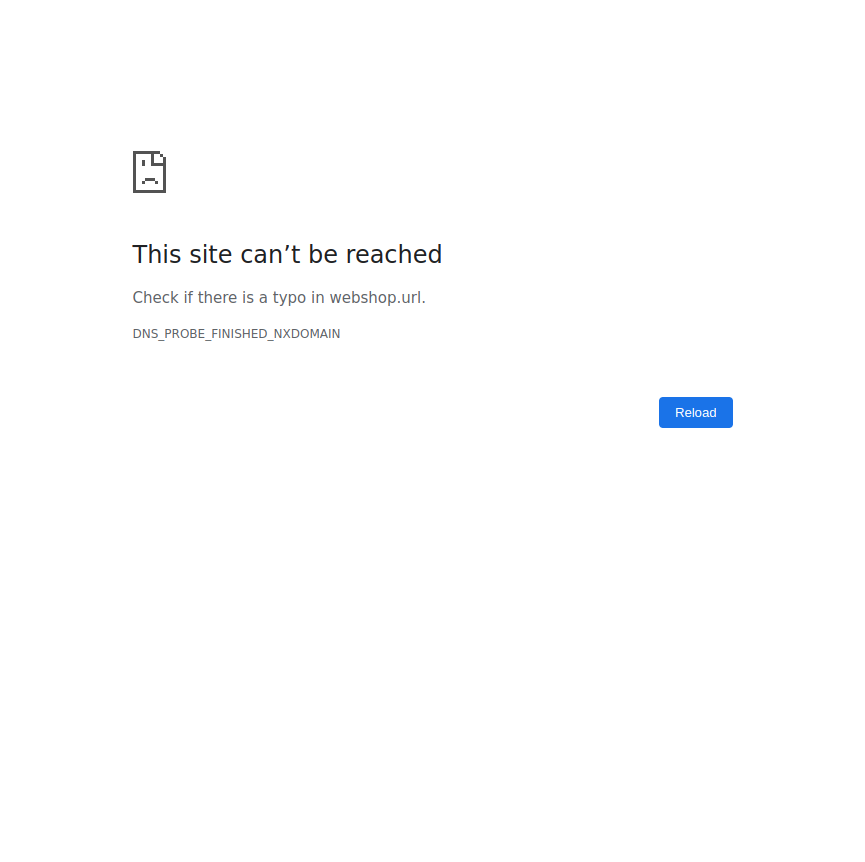
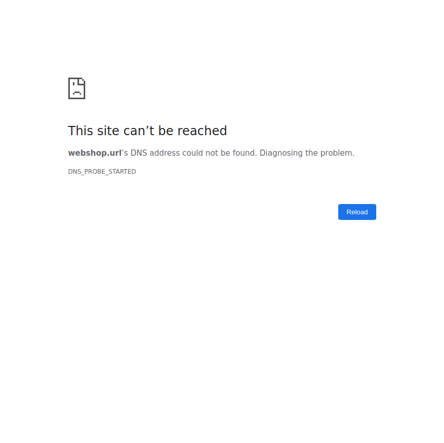

Started
Jun 21, 2022 09:51:18 PM
Ended
Jun 21, 2022 09:51:27 PM
Features Passed
0
Features Failed
1
Features
Scenarios
Steps
Timeline
Tags
| Name | Passed | Failed | Skipped | Others | Passed % |
|---|---|---|---|---|---|
| @Requirement4 | 0 | 2 | 0 | 0 | 0% |
| @Requirement1 | 0 | 4 | 0 | 0 | 0% |
| @Requirement2 | 0 | 1 | 0 | 0 | 0% |
| @Requirement3 | 0 | 1 | 0 | 0 | 0% |
System/Environment
| Name | Value |
|---|---|
| AppName | Stroer |
| user | Savita |
| build | 2.0 |
| os | Ubuntu |
-
Stroer Case Study
9:51:19 PM / 00:00:08:088 Fail
Stroer Case Study
06.21.2022 9:51:19 PM 06.21.2022 9:51:27 PM 00:00:08:088 · #test-id=1FailTest01 >> verify user is able login to webShopWhen User navigates to web shop URLGiven Load Test Data from "" Step skippedWhen User enters valid credentialsStep skippedAnd User clicks on Login buttonStep skippedThen User should get successful login messageStep skippedThen User navigates to webShop home pageStep skippedcom.testproject.stepDefs.Hooks.tearDown(io.cucumber.java.Scenario)Scenario fail FailTest02 >> verify user is not able to login to webShop with wrong user detailsWhen User navigates to web shop URLGiven Load second Test Data from "
FailTest02 >> verify user is not able to login to webShop with wrong user detailsWhen User navigates to web shop URLGiven Load second Test Data from "" Step skippedWhen User enters invalid credentialsStep skippedAnd User clicks on Login buttonStep skippedThen User should get error messageStep skippedThen User should remain on login pageStep skippedcom.testproject.stepDefs.Hooks.tearDown(io.cucumber.java.Scenario)Scenario fail FailTest03 >> verify user is able to add product to cartWhen User navigates to web shop URLGiven Load Test Data from "
FailTest03 >> verify user is able to add product to cartWhen User navigates to web shop URLGiven Load Test Data from "" Step skippedWhen User enters valid credentialsStep skippedAnd User clicks on Login buttonStep skippedWhen User navigates to webShop home pageStep skippedThen User checks product name, product price and descriptionStep skippedWhen User clicks on add to cart buttonStep skippedThen product is added to cartStep skippedcom.testproject.stepDefs.Hooks.tearDown(io.cucumber.java.Scenario)Scenario failFailTest04 >> verify checkout pageWhen User navigates to web shop URLGiven Load Test Data from "" Step skippedWhen User enters valid credentialsStep skippedAnd User clicks on Login buttonStep skippedWhen User navigates to webShop home pageStep skippedWhen User clicks on add to cart buttonStep skippedThen product is added to cartStep skippedWhen user clicks on cart buttonStep skippedThen user navigates to checkout pageStep skippedThen User checks his details and product in cartStep skippedWhen user clicks on checkout buttonStep skippedThen user gets success messageStep skippedcom.testproject.stepDefs.Hooks.tearDown(io.cucumber.java.Scenario)Scenario fail FailTest05 >> Verify order tablesWhen User navigates to web shop URLGiven Load Test Data from "
FailTest05 >> Verify order tablesWhen User navigates to web shop URLGiven Load Test Data from "" Step skippedWhen User enters valid credentialsStep skippedAnd User clicks on Login buttonStep skippedWhen User clicks on add to cart buttonStep skippedAnd user clicks on cart buttonStep skippedAnd user clicks on checkout buttonStep skippedThen Order table is createdStep skippedAnd User verifies table dataStep skippedcom.testproject.stepDefs.Hooks.tearDown(io.cucumber.java.Scenario)Scenario fail FailTest06 >> Verify confirmation email is sent to CustomerWhen User navigates to web shop URLGiven Load Test Data from "
FailTest06 >> Verify confirmation email is sent to CustomerWhen User navigates to web shop URLGiven Load Test Data from "" Step skippedWhen User enters valid credentialsStep skippedAnd User clicks on Login buttonStep skippedWhen User clicks on add to cart buttonStep skippedAnd user clicks on cart buttonStep skippedAnd user clicks on checkout buttonStep skippedThen verify confirmation email is sent to customerStep skippedcom.testproject.stepDefs.Hooks.tearDown(io.cucumber.java.Scenario)Scenario failFailTest07 >> Verify order xml is createdWhen User navigates to web shop URLGiven Load Test Data from "" Step skippedWhen User enters valid credentialsStep skippedAnd User clicks on Login buttonStep skippedWhen User clicks on add to cart buttonStep skippedAnd user clicks on cart buttonStep skippedAnd user clicks on checkout buttonStep skippedThen verify order xml is createdStep skippedcom.testproject.stepDefs.Hooks.tearDown(io.cucumber.java.Scenario)Scenario fail FailTest08 >> Verify product details in order xmlWhen User navigates to web shop URLGiven Load Test Data from "
FailTest08 >> Verify product details in order xmlWhen User navigates to web shop URLGiven Load Test Data from "" Step skippedWhen User enters valid credentialsStep skippedAnd User clicks on Login buttonStep skippedWhen User clicks on add to cart buttonStep skippedAnd user clicks on cart buttonStep skippedAnd user clicks on checkout buttonStep skippedAnd read created order xmlStep skippedThen User can verify product detailsin xml Step skippedcom.testproject.stepDefs.Hooks.tearDown(io.cucumber.java.Scenario)Scenario fail
-
@Requirement4
2 tests
@Requirement4
2 failedStatus Timestamp TestName Fail 21:51:25 PM Test07 >> Verify order xml is created Stroer Case Study.Test07 >> Verify order xml is createdFail 21:51:26 PM Test08 >> Verify product details in order xml Stroer Case Study.Test08 >> Verify product details in order xml -
@Requirement1
4 tests
@Requirement1
4 failedStatus Timestamp TestName Fail 21:51:19 PM Test01 >> verify user is able login to webShop Stroer Case Study.Test01 >> verify user is able login to webShopFail 21:51:20 PM Test02 >> verify user is not able to login to webShop with wrong user details Stroer Case Study.Test02 >> verify user is not able to login to webShop with wrong user detailsFail 21:51:21 PM Test03 >> verify user is able to add product to cart Stroer Case Study.Test03 >> verify user is able to add product to cartFail 21:51:22 PM Test04 >> verify checkout page Stroer Case Study.Test04 >> verify checkout page -
@Requirement2
1 tests
@Requirement2
1 failedStatus Timestamp TestName Fail 21:51:23 PM Test05 >> Verify order tables Stroer Case Study.Test05 >> Verify order tables -
@Requirement3
1 tests
@Requirement3
1 failedStatus Timestamp TestName Fail 21:51:24 PM Test06 >> Verify confirmation email is sent to Customer Stroer Case Study.Test06 >> Verify confirmation email is sent to Customer
-
org.openqa.selenium.WebDriverException
8 tests
org.openqa.selenium.WebDriverException
8 failedStatus Timestamp TestName Fail 21:51:19 PM When User navigates to web shop URL Stroer Case Study.Test01 >> verify user is able login to webShop.When User navigates to web shop URLFail 21:51:20 PM When User navigates to web shop URL Stroer Case Study.Test02 >> verify user is not able to login to webShop with wrong user details.When User navigates to web shop URLFail 21:51:21 PM When User navigates to web shop URL Stroer Case Study.Test03 >> verify user is able to add product to cart.When User navigates to web shop URLFail 21:51:22 PM When User navigates to web shop URL Stroer Case Study.Test04 >> verify checkout page.When User navigates to web shop URLFail 21:51:23 PM When User navigates to web shop URL Stroer Case Study.Test05 >> Verify order tables.When User navigates to web shop URLFail 21:51:24 PM When User navigates to web shop URL Stroer Case Study.Test06 >> Verify confirmation email is sent to Customer.When User navigates to web shop URLFail 21:51:25 PM When User navigates to web shop URL Stroer Case Study.Test07 >> Verify order xml is created.When User navigates to web shop URLFail 21:51:26 PM When User navigates to web shop URL Stroer Case Study.Test08 >> Verify product details in order xml.When User navigates to web shop URL